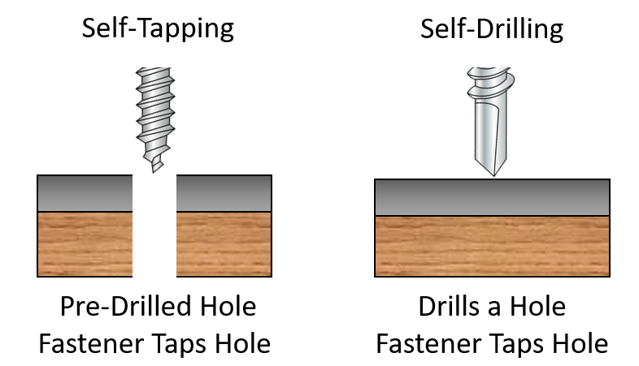

Where we are: from mockup to laser-cut assembly
Six steps from sketch to race — Class 3 is step two. Today the design becomes a real, cut part.
Week 2
Sketch & Prototype
- Rapidly sketch concept variations
- Build a foam core mockup to test form and mechanics
Week 3 · today
Laser Cutting
- Create a laser-ready 2D design file from a sketch
- Laser cut structural components
Week 4
3D Printing
- Model 3D parts — mounts, brackets, custom components
- 3D print functional parts for your robot
Week 5
Electronics
- Wire motors, sensors, and controls on a breadboard
- Program basic movements using MicroPython and AI
Week 6
Connectivity
- Connect a microcontroller to a wireless network
- Build a remote control interface
Weeks 7–8
Assemble & Race
- Integrate all components and test runs
- Demonstrate the robot with motors mounted


Measure & sketch
Every hole and every slot starts with a real number from a real part. Read the sketch, check the datasheet, then measure it yourself.


Read the sketch like a drawing
Overall size
The footprint and height decide how much sheet you need and how the parts nest together.
Hole positions
Where a hole goes matters more than its size. Spacing between holes is what makes a part fit.
Material thickness
Every slot has to match the plywood thickness — measure it with calipers, don't trust the label.
Datasheets vs your own measurements


The four numbers you need from any datasheet
Fasteners: how flat parts become a 3D object


Onshape design demo
Onshape runs in your browser — nothing to install, and your work is always saved. Sign up free with your Tufts account, then follow along.
Demo 1
A workspace overview
- Documents, part studios, and the feature list
- Where your tools live on screen
Demo 2
A basic rectangle
- Start a sketch on a plane
- Draw the base plate with the rectangle tool
Demo 3
Updating dimensions
- Drive every size from a typed number
- Change it later without redrawing
Demo 4
Mirroring
- Draw one wheel mount
- Mirror it across the centreline
Demo 5
Combining shapes and the Trim tool
- Merge outlines into one profile
- Trim away the lines you don't want
Demo 6
Creating joints
- Check that the parts assemble
- Test the motion before you cut
Want the longer walkthrough?
Nine short videos covering the same ground at your own pace — the workspace, your first sketch, and how to export the DXF:
Laser cutting vs 3D printing
Both are digital fabrication — but they work in opposite directions, so they suit different parts.
Laser cutting
- Subtractive — removes material from a flat sheet
- Wood, acrylic, paper, fabric, and some plastics
- Best for 2D designs; 3D shapes assemble from flat parts
- High precision and tight tolerances on flat stock
- Fast for batch production from standard sheet sizes
- Minimal finishing — usually just cleaning the edges
3D printing
- Additive — builds the object layer by layer
- Thermoplastics, resins, and metal powders
- Excellent for intricate, organic 3D geometry
- Good resolution, but layer lines affect the finish
- Slower on large or highly detailed objects
- Support removal, sanding, and finishing


Laser cutting step by step
Your DXF will look wrong when it opens in Inkscape — that's normal. Seven steps take it from file to finished cut.
Step 1
Set the stroke
- File > Open your DXF
- Choose "Read from file" scaling
- Select All, set width to Hairline
Step 2
Fill to No paint
- Ungroup if it came in as one piece
- Fill and Stroke > Fill
- Click the X for No paint
Step 3
Make cuts 100% red
- Stroke paint > Flat color
- Set R 255, G 0, B 0
- Check opacity is 100%
Step 4
Materials & thickness
- In UCP, pick your material
- Enter 3.00 mm, then Apply
- Check the whiteboard for power and speed
Step 5
Print from Inkscape
- Ctrl/⌘+P to the VLS3.60/75 printer
- UCP opens with your drawing
- Click the UCP icon if it hides
Steps 6–7
Place, focus, cut
- Move the job to a corner to save material
- Focus the laser, close the lid, press play


Shortcut: the laser cut shape generator
Need a box, a tray, or a living hinge? Generate the panels, then edit them if you need to.


What's due
One individual project this week — your first finished fabricated object.
Create an interesting laser-cut object
Anything you like. You can search for existing laser project templates or create your own in Onshape. Submit your vector design files and upload photos of what you've created, and bring the assembled object to class for a demo.
End-of-class reflection
Submit your reflection at go.tufts.edu/reflect before you leave.
Submit in Canvas
Files + photos
- Your vector design file (DXF, SVG, or AI)
- Photos of the assembled object
Bring to class
The assembled object
- Slotted, glued, or bolted together
- Ready to show and talk about